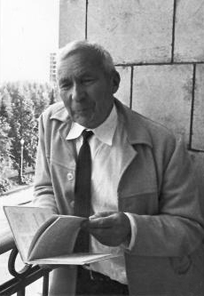
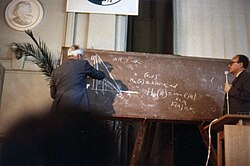
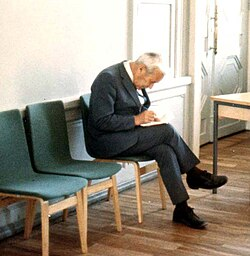

This article needs more citations. (November 2025) |
Andrey Kolmogorov | |
|---|---|
Андрей Колмогоров | |
 | |
| Born | Andrey Nikolaevich Kolmogorov 25 April 1903 |
| Died | 20 October 1987 (aged 84) |
| Alma mater | Moscow State University (PhD) |
| Known for | |
| Spouse |
Anna Dmitrievna Egorova
(m. 1942–1987) |
| Awards |
|
| Scientific career | |
| Fields | Mathematics |
| Institutions | Moscow State University |
| Nikolai Luzin[3] | |
Doctoral students |
|
Other notable students | Tony Hoare[4] |
{kind=link}
Andrey Nikolaevich Kolmogorov (Russian: Андре́й Никола́евич Колмого́ров, IPA: [ɐnˈdrʲej nʲɪkɐˈlajɪvʲɪtɕ kəlmɐˈɡorəf] ⓘ, 25 April 1903 – 20 October 1987)[5][6] was a Soviet mathematician who played a central role in the creation of modern probability theory. He also gave fundamental contributions to the mathematics of topology, intuitionistic logic, turbulence, classical mechanics, functional analysis, algorithmic information theory and computational complexity.[7][2][8]
Biography
Early life
Andrey Kolmogorov was born in Tambov, about 500 kilometers southeast of Moscow, in 1903. His unmarried mother, Maria Yakovlevna Kolmogorova, died giving birth to him.[9] Andrey was raised by two of his aunts in Tunoshna (near Yaroslavl) at the estate of his grandfather, a well-to-do nobleman.
Little is known about Andrey's father. He was supposedly named Nikolai Matveyevich Katayev and had been an agronomist. Katayev had been exiled from Saint Petersburg to the Yaroslavl province after his participation in the revolutionary movement against the tsars. He disappeared in 1919 and was presumed to have been killed in the Russian Civil War.
Andrey Kolmogorov was educated in his aunt Vera's village school, and his earliest literary efforts and mathematical papers were printed in the school journal "The Swallow of Spring". Andrey (at the age of five) was the "editor" of the mathematical section of this journal. Kolmogorov's interest in mathematics was spurred when he noticed, at the age of six, the regularity in the sum of the series of odd numbers: etc.[10]
In 1910, his aunt adopted him, and they moved to Moscow, where he graduated from high school in 1920. Later that same year, Kolmogorov began to study at Moscow State University and at the same time Mendeleev Moscow Institute of Chemistry and Technology.[11] Kolmogorov writes about this time: "I arrived at Moscow University with a fair knowledge of mathematics. I knew in particular the beginning of set theory. I studied many questions in articles in the Encyclopedia of Brockhaus and Efron, filling out for myself what was presented too concisely in these articles."[12]
Kolmogorov gained a reputation for his wide-ranging erudition. While an undergraduate student in college, he attended the seminars of the Russian historian S. V. Bakhrushin, and he published his first research paper on the fifteenth and sixteenth centuries' landholding practices in the Novgorod Republic.[13] During the same period (1921–22), Kolmogorov worked out and proved several results in set theory and in the theory of Fourier series.
Adulthood
In 1922, Kolmogorov gained international recognition for constructing a Fourier series that diverges almost everywhere.[14][15] Around this time, he decided to devote his life to mathematics.
In 1925, Kolmogorov graduated from Moscow State University and began to study under the supervision of Nikolai Luzin.[3] He formed a lifelong close friendship with Pavel Alexandrov, a fellow student of Luzin; indeed, several researchers have concluded that the two friends were sexually involved,[16][17][18] although neither acknowledged this openly. Kolmogorov (together with Aleksandr Khinchin) became interested in probability theory. Also in 1925, he published his work in intuitionistic logic, "On the principle of the excluded middle," in which he proved that under a certain interpretation, all statements of classical formal logic can be formulated as those of intuitionistic logic. In 1929, Kolmogorov earned his Doctor of Philosophy degree from Moscow State University. In 1929, Kolmogorov and Alexandrov during a long travel stayed about a month in an island in lake Sevan in Armenia.[19]
In 1930, Kolmogorov went on his first long trip abroad, traveling to Göttingen and Munich and then to Paris. He had various scientific contacts in Göttingen, first with Richard Courant and his students working on limit theorems, where diffusion processes proved to be the limits of discrete random processes, then with Hermann Weyl in intuitionistic logic, and lastly with Edmund Landau in function theory. His pioneering work About the Analytical Methods of Probability Theory was published (in German) in 1931. Also in 1931, he became a professor at Moscow State University.
In 1933, Kolmogorov published his book Foundations of the Theory of Probability, laying the modern axiomatic foundations of probability theory and establishing his reputation as the world's leading expert in this field. In 1935, Kolmogorov became the first chairman of the department of probability theory at Moscow State University. Around the same years (1936) Kolmogorov contributed to the field of ecology and generalized the Lotka–Volterra model of predator–prey systems.
During the Great Purge in 1936, Kolmogorov's doctoral advisor Nikolai Luzin became a high-profile target of Stalin's regime in what is now called the "Luzin Affair". Kolmogorov and several other students of Luzin testified against Luzin, accusing him of plagiarism, nepotism, and other forms of misconduct; the hearings eventually concluded that he was a servant to "fascistoid science" and thus an enemy of the Soviet people. Luzin lost his academic positions, but curiously, he was neither arrested nor expelled from the Academy of Sciences of the Soviet Union.[20][21] The question of whether Kolmogorov and others were coerced into testifying against their teacher remains a topic of considerable speculation among historians; all parties involved refused to publicly discuss the case for the rest of their lives. Soviet-Russian mathematician Semën Samsonovich Kutateladze concluded in 2013, after reviewing archival documents made available during the 1990s and other surviving testimonies, that the students of Luzin had initiated the accusations against Luzin out of personal acrimony; there was no definitive evidence that the students were coerced by the state, nor was there any definitive evidence to support their allegations of academic misconduct.[22] Soviet historian of mathematics A.P. Yushkevich surmised that, unlike many of the other high-profile persecutions of the era, Stalin did not personally initiate the persecution of Luzin and instead eventually concluded that he was not a threat to the regime, which would explain the unusually mild punishment relative to other contemporaries.[23]
In a 1938 paper, Kolmogorov "established the basic theorems for smoothing and predicting stationary stochastic processes"—a paper that had major military applications during the Cold War.[24] In 1939, he was elected a full member (academician) of the USSR Academy of Sciences.
During World War II Kolmogorov contributed to the Soviet war effort by applying statistical theory to artillery fire, developing a scheme of stochastic distribution of barrage balloons intended to help protect Moscow from German bombers during the Battle of Moscow.[25]
In his study of stochastic processes, especially Markov processes, Kolmogorov and the British mathematician Sydney Chapman independently developed a pivotal set of equations in the field that have been given the name of the Chapman–Kolmogorov equations.
{kind=link}

{kind=link}

Later, Kolmogorov focused his research on turbulence, beginning his publications in 1941. In classical mechanics, he is best known for the Kolmogorov–Arnold–Moser theorem, first presented in 1954 at the International Congress of Mathematicians.[7] In 1957, working jointly with his student Vladimir Arnold, he solved a particular interpretation of Hilbert's thirteenth problem. Around this time, he also began to develop and has since been considered a founder of algorithmic complexity theory – often referred to as Kolmogorov complexity theory.
Kolmogorov married Anna Dmitrievna Egorova in 1942. He pursued a vigorous teaching routine throughout his life, both at the university level and also with younger children, as he was actively involved in developing a pedagogy for gifted children in literature, music, and mathematics. At Moscow State University, Kolmogorov occupied different positions, including the heads of several departments: probability, statistics, and random processes; mathematical logic. He also served as the Dean of the Moscow State University Department of Mechanics and Mathematics.
In 1971, Kolmogorov joined an oceanographic expedition aboard the research vessel Dmitri Mendeleev. He wrote a number of articles for the Great Soviet Encyclopedia. In his later years, he devoted much of his effort to the mathematical and philosophical relationship between probability theory in abstract and applied areas.[26]
Kolmogorov died in Moscow in 1987, and his remains were buried in the Novodevichy cemetery.
A quotation attributed to Kolmogorov is [translated into English]: "Every mathematician believes that he is ahead of the others. The reason none state this belief in public is because they are intelligent people."
Vladimir Arnold once said: "Kolmogorov – Poincaré – Gauss – Euler – Newton, are only five lives separating us from the source of our science."[27]
Awards and honours
Kolmogorov received numerous awards and honours both during and after his lifetime:
- Member of the Russian Academy of Sciences[1]
- Awarded the Stalin Prize in 1941
- Elected an Honorary Member of the American Academy of Arts and Sciences in 1959[28]
- Elected member of the American Philosophical Society in 1961[29]
- Awarded the Balzan Prize in 1962
- Elected a Foreign Member of the Royal Netherlands Academy of Arts and Sciences in 1963[30]
- Elected a Foreign Member of the Royal Society (ForMemRS) in 1964.[2]
- Awarded the Lenin Prize in 1965
- Elected member of the United States National Academy of Sciences in 1967[31]
- Awarded the Wolf Prize in 1980
- Awarded the Lobachevsky Prize in 1986
The following are named in Kolmogorov's honour:
- Fisher–Kolmogorov equation
- Johnson–Mehl–Avrami–Kolmogorov equation
- Kolmogorov axioms
- Kolmogorov equations (also known as the Fokker–Planck equations in the context of diffusion and in the forward case)
- Kolmogorov dimension (upper box dimension)
- Kolmogorov–Arnold theorem
- Kolmogorov–Arnold–Moser theorem
- Kolmogorov continuity theorem
- Kolmogorov's criterion
- Kolmogorov extension theorem
- Kolmogorov's three-series theorem
- Convergence of Fourier series
- Gnedenko-Kolmogorov central limit theorem
- Quasi-arithmetic mean (it is also called Kolmogorov mean)
- Kolmogorov homology
- Kolmogorov's inequality
- Landau–Kolmogorov inequality
- Kolmogorov integral
- Brouwer–Heyting–Kolmogorov interpretation
- Kolmogorov microscales
- Kolmogorov's normability criterion
- Fréchet–Kolmogorov theorem
- Kolmogorov space
- Kolmogorov complexity
- Kolmogorov–Smirnov test
- Wiener filter (also known as Wiener–Kolmogorov filtering theory)
- Wiener–Kolmogorov prediction
- Kolmogorov automorphism
- Kolmogorov's characterization of reversible diffusions
- Borel–Kolmogorov paradox
- Chapman–Kolmogorov equation
- Hahn–Kolmogorov theorem
- Johnson–Mehl–Avrami–Kolmogorov equation
- Kolmogorov–Sinai entropy
- Astronomical seeing described by Kolmogorov's turbulence law
- Kolmogorov structure function
- Kolmogorov–Uspenskii machine model
- Kolmogorov's zero–one law
- Kolmogorov–Zurbenko filter
- Kolmogorov's two-series theorem
- Rao–Blackwell–Kolmogorov theorem
- Khinchin–Kolmogorov theorem
- Kolmogorov population model
- Kolmogorov's Strong Law of Large Numbers
Bibliography
A bibliography of his works appeared in "Publications of A. N. Kolmogorov". Annals of Probability. 17 (3): 945–964. July 1989. doi:10.1214/aop/1176991252.
- Kolmogorov, Andrey (1933). Grundbegriffe der Wahrscheinlichkeitsrechnung (in German). Berlin: Julius Springer.[32]
- Translation: Kolmogorov, Andrey (1956). Foundations of the Theory of Probability (2nd ed.). New York: Chelsea. ISBN 978-0-8284-0023-7. Archived from the original on 14 September 2018. Retrieved 17 February 2016.
{{cite book}}: ISBN / Date incompatibility (help)[33]
- Translation: Kolmogorov, Andrey (1956). Foundations of the Theory of Probability (2nd ed.). New York: Chelsea. ISBN 978-0-8284-0023-7. Archived from the original on 14 September 2018. Retrieved 17 February 2016.
- 1991–93. Selected works of A.N. Kolmogorov, 3 vols. Tikhomirov, V. M., ed., Volosov, V. M., trans. Dordrecht:Kluwer Academic Publishers. ISBN 90-277-2796-1
- 1925. "On the principle of the excluded middle" in Jean van Heijenoort, 1967. A Source Book in Mathematical Logic, 1879–1931. Harvard Univ. Press: 414–37.
- Kolmogorov, Andrei N. (1963). "On Tables of Random Numbers". Sankhyā Ser. A. 25: 369–375. MR 0178484.
- Kolmogorov, Andrei N. (1998) [1963]. "On Tables of Random Numbers". Theoretical Computer Science. 207 (2): 387–395. doi:10.1016/S0304-3975(98)00075-9. MR 1643414.
- Kolmogorov, Andrei N. (2005) Selected works. In 6 volumes. Moscow (in Russian)
Textbooks:
- A. N. Kolmogorov and B. V. Gnedenko. "Limit distributions for sums of independent random variables", 1954.
- A. N. Kolmogorov and S. V. Fomin. "Elements of the Theory of Functions and Functional Analysis", Publication 1999, Publication 2012
- Kolmogorov, Andrey Nikolaevich; Fomin, Sergei Vasilyevich (1975) [1970] Introductory Real Analysis, New York: Dover Publications. ISBN 978-0-486-61226-3..
References
- ^ a b Youschkevitch, A. P. (1983). "A. N. Kolmogorov: Historian and philosopher of mathematics on the occasion of his 80th birthday". Historia Mathematica. 10 (4): 383–395. doi:10.1016/0315-0860(83)90001-0.
- ^ a b c Kendall, D. G. (1991). "Andrei Nikolaevich Kolmogorov. 25 April 1903 – 20 October 1987". Biographical Memoirs of Fellows of the Royal Society. 37 (37): 300–326. doi:10.1098/rsbm.1991.0015. S2CID 58080873.
- ^ a b c Andrey Kolmogorov at the Mathematics Genealogy Project
- ^ Sufrin, Bernard (12 April 2026). "Sir Tony Hoare obituary". The Guardian.
- ^ "Academician Andrei Nikolaevich Kolmogorov (obituary)". Russian Mathematical Surveys. 43 (1): 1–9. 1988. Bibcode:1988RuMaS..43....1.. doi:10.1070/RM1988v043n01ABEH001555. S2CID 250857950.
- ^ Parthasarathy, K. R. (1988). "Obituary: Andrei Nikolaevich Kolmogorov". Journal of Applied Probability. 25 (2): 445–450. doi:10.1017/S0021900200041115. JSTOR 3214455.
- ^ a b Yaglom, A M (January 1994). "A. N. Kolmogorov as a Fluid Mechanician and Founder of a School in Turbulence Research". Annual Review of Fluid Mechanics. 26 (1): 1–23. doi:10.1146/annurev.fl.26.010194.000245. ISSN 0066-4189.
- ^ O'Connor, John J.; Robertson, Edmund F. "Andrey Kolmogorov". MacTutor History of Mathematics Archive. University of St Andrews.
- ^ Encyclopædia Britannica Online, s. v. "Andrey Nikolayevich Kolmogorov", accessed February 22, 2013.
- ^ Tikhomirov, V. M. (2001). "Andrei N. Kolmogorov". Wolf Prize in Mathematics, v.2. World Scientific. pp. 119–141. ISBN 978-9812811769.
- ^ "Андрей Николаевич КОЛМОГОРОВ. Curriculum Vitae". Retrieved 19 June 2023.
- ^ AMS (2000). Kolmogorov in Perspective (History of Mathematics). American Mathematical Society. p. 6. ISBN 978-0821829189.
- ^ Salsburg, David (2001). The Lady Tasting Tea: How Statistics Revolutionized Science in the Twentieth Century. New York: W. H. Freeman. pp. 137–50. ISBN 978-0-7167-4106-0.
- ^ Kolmogorov, A. (1923). "Une série de Fourier–Lebesgue divergente presque partout" [A Fourier–Lebesgue series that diverges almost everywhere] (PDF). Fundamenta Mathematicae (in French). 4 (1): 324–328. doi:10.4064/fm-4-1-324-328.
- ^ V. I. Arnold-Max Dresden. "In Brief". Archived from the original on 5 October 2013.
- ^ Graham, Loren R.; Kantor, Jean-Michel (2009). Naming infinity: a true story of religious mysticism and mathematical creativity. Harvard University Press. p. 185. ISBN 978-0-674-03293-4.
The police soon learned of Kolmogorov and Alexandrov's homosexual bond, and they used that knowledge to obtain the behavior that they wished.
- ^ Gessen, Masha (2011). Perfect Rigour: A Genius and the Mathematical Breakthrough of a Lifetime. Icon Books Ltd. p. 17.
Kolmogorov alone among the top Soviet mathematicians avoided being drafted into the postwar military effort. His students always wondered why—and the only likely explanation seems to be Kolmogorov's homosexuality. His lifelong partner, with whom he shared a home starting in 1929, was the topologist Pavel Alexandrov.
- ^ Szpiro, George (2011). Pricing the Future: Finance, Physics, and the 300-year Journey to the Black-Scholes Equation. Basic Books. p. 152. ISBN 9780465022489.
It was generally known that they had a homosexual relationship, although they never acknowledged their liaison
- ^ Gurzadyan, Vahe (2004). "Kolmogorov and Aleksandrov in Sevan monastery". Mathematical Intelligencer. 26: 40–43. arXiv:math/0410397. doi:10.1007/BF02985651.
- ^ Lorentz, G. G. (2001). "Who discovered analytic sets?". The Mathematical Intelligencer. 23 (4): 28–32. doi:10.1007/BF03024600. S2CID 121273798.
- ^ O'Connor, John J.; Robertson, Edmund F. "The 1936 Luzin affair". MacTutor History of Mathematics Archive. University of St Andrews.
- ^ "СИБИРСКИЕ ЭЛЕКТРОННЫЕ МАТЕМАТИЧЕСКИЕ ИЗВЕСТИ" (PDF). semr.math.nsc.ru (in Russian). Retrieved 19 June 2023.
- ^ A.P. Yushkevich, The Lusin Affair (in Russian).
- ^ Salsburg, p. 139.
- ^ Gleick, James (2012). The Information: A history, a theory, a flood. New York: Vintage Books. p. 334. ISBN 978-1-4000-9623-7.
- ^ Salsburg, pp. 145–7.
- ^ V. I. Arnol’d, "A few words on Andrei Nikolaevich Kolmogorov", Russian Mathematical Surveys, 1988, Volume 43, Issue 6, pp. 43–44
- ^ "Andrei Nikolayevich Kolmogorov". American Academy of Arts & Sciences. Retrieved 21 November 2022.
- ^ "APS Member History". search.amphilsoc.org. Retrieved 21 November 2022.
- ^ "A.N. Kolmogorov (1903–1987)". Royal Netherlands Academy of Arts and Sciences. Retrieved 22 July 2015.
- ^ "A. Kolmogorov". www.nasonline.org. Retrieved 21 November 2022.
- ^ Rietz, H. L. (1934). "Review: Grundbegriffe der Wahrscheinlichkeitsrechnung by A. Kolmogoroff" (PDF). Bull. Amer. Math. Soc. 40 (7): 522–523. doi:10.1090/s0002-9904-1934-05895-6. Archived (PDF) from the original on 9 October 2022.
- ^ Gouvêa, Fernando Q. "Review of Foundations of the Theory of Probability by A. N. Kolmogorov". MAA Reviews, Mathematical Association of America.
External links
- Portal dedicated to AN Kolmogorov (his scientific and popular publications, articles about him).(in Russian)
- The Legacy of Andrei Nikolaevich Kolmogorov
- Biography at Scholarpedia
- Derzhavin Tambov State University - Institute of Mathematics, Physics and Information Technology Archived 2019-10-05 at the Wayback Machine
- The origins and legacy of Kolmogorov's Grundbegriffe
- Vitanyi, P.M.B., Andrey Nikolaevich Kolmogorov. Scholarpedia, 2(2):2798; 2007
- Collection of links to Kolmogorov resources
- Interview with Professor A. M. Yaglom about Kolmogorov, Gelfand and other (1988, Ithaca, New York)
- Kolmogorov School at Moscow University
- Annual Kolmogorov Lecture at the Computer Learning Research Centre at Royal Holloway, University of London
- Lorentz G. G., Mathematics and Politics in the Soviet Union from 1928 to 1953
- Kutateladze S. S., Sic Transit... or Heroes, Villains, and Rights of Memory.
- Kutateladze S. S., The Tragedy of Mathematics in Russia
- Video recording of the G. Falkovich's lecture: "Andrey Nikolaevich Kolmogorov (1903–1987) and the Russian school"
- Andrey Kolmogorov at the Mathematics Genealogy Project